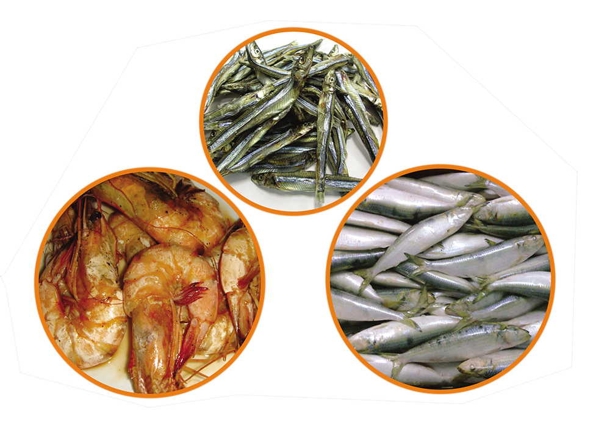

Iodine deficiency disorders (IDD)
Iodine deficiency is the world’s single most significant cause of preventable brain damage and mental retardation. It decreases child survival and impairs growth and development. Iodine deficiency during pregnancy causes abortions, still births and congenital defects. Even mild iodine deficiency may affect intellectual development.
Lack of iodine in food and goitrogens are some causes for iodine deficiency. Goiter or the enlarged thyroid gland is the most visible clinical sign of iodine deficiency.

The universal salt iodization programme was introduced and successfully implemented in the early 1990’s to control iodine deficiency in Sri Lanka. The last National IDD survey conducted in 2005 identified iodine deficiency a s a significant public health problem in only three provinces (western, central and Uva) in the island.
IDD was not a big problem in other areas. In fact, among children in the Northern and North central provinces, excess iodine had been found in urine samples.
Iodized salt and other iodine-rich food are the most effective solution for iodine deficiency.